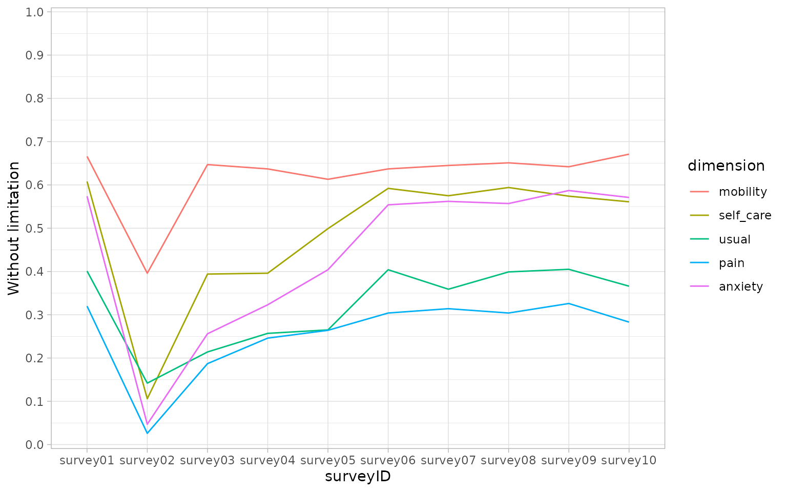
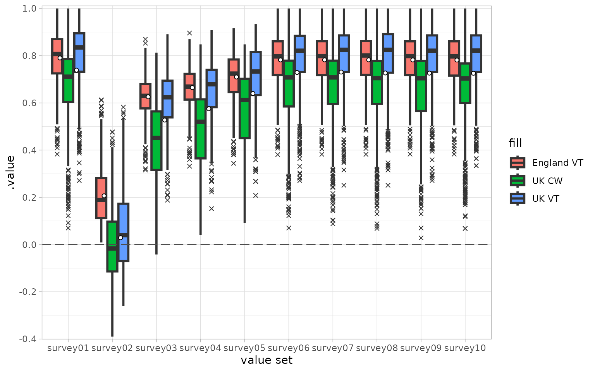

qalytools provides a simple and intuitive user interface for the analysis of EQ-5D surveys. It builds upon the eq5d package to facilitate the calculation of QALY metrics and other related values across multiple surveys.
Overview
The package provides a range of functions:
Coercion functions
as_eq5d3l(),as_eq5d5l()andas_eq5dy3l()for converting existing objects to EQ5D data frame subclasses (EQ5D3L, EQ5D5L and EQ5DY3L).The calculation of utility values based on a range of different value sets. This functionality is provided via the
calculate_utility(),add_utility()andavailable_valuesets()functions which are wrappers around the functionality of the underlying eq5d package.The calculation of different Quality of Life Years (QALY) metrics including unadjusted ‘raw’ values, and the disutility from both perfect health and, optionally, a specified baseline. See
calculate_qalys().The calculation of the Paretian Classification of Health Change (PCHC) in an individual’s health state between two surveys via
calculate_pchc()(again wrapping functionality of the eq5d package).Easy calculation of responses with a health limitation (i.e. a non-one response in one of the dimensions) via
calculate_limitation().
Whilst this vignette provides an introduction to the core functionality of the package, an example analysis can be found in the EQ5D Analysis article on the package website.
The EQ5D object class
We define an EQ5D object as a table with data
represented in long format that meets a few additional criteria:
It contains columns that represent dimensions from the EQ5D survey specification as well as a column representing the Visual Analogue Score (columns ‘mobility’, ‘self_care’, ‘usual’, ‘pain’, ‘anxiety’ and ‘vas’ in the example table below)
Dimension values must be whole numbers, bounded between 1 and 3 for EQ5D3L and EQ5D3Y surveys or bounded between 1 and 5 for EQ5D5L surveys.
It contains a column that acts as a unique respondent identifier (
respondentID) and another that identifying different surveys over time (`surveyID). Together these should uniquely identify a response (i.e. no combination of these should be duplicated within the given data frame).
| surveyID | respondentID | time_index | mobility | self_care | usual | pain | anxiety | vas | sex | age |
|---|---|---|---|---|---|---|---|---|---|---|
| . | . | . | . | . | . | . | . | . | . | . |
| 1 | 1 | 30 | 3 | 2 | 2 | 1 | 1 | 87 | Female | 25 |
| 1 | 2 | 30 | 2 | 2 | 2 | 2 | 2 | 65 | Male | 30 |
| 1 | 3 | 30 | 1 | 3 | 3 | 1 | 3 | 76 | Male | 39 |
| 1 | 4 | 30 | 1 | 2 | 3 | 2 | 4 | 55 | Female | 60 |
| 1 | 5 | 30 | 2 | 1 | 4 | 1 | 1 | 80 | Male | 28 |
| 1 | 6 | 30 | 1 | 3 | 2 | 1 | 1 | 83 | Male | 59 |
| . | . | . | . | . | . | . | . | . | . | . |
In qalytools these EQ5D objects are implemented as a
subclass of data frame and we provide associated methods for working
with this class.
Usage
In the following examples we make use of a synthetic EQ-5D-5L data set that is included in the package
library(qalytools)
library(ggplot2)
# Example EQ5D5L data
data("EQ5D5L_surveys")
str(EQ5D5L_surveys)
#> tibble [10,000 × 12] (S3: tbl_df/tbl/data.frame)
#> $ surveyID : chr [1:10000] "survey01" "survey02" "survey03" "survey04" ...
#> $ respondentID: int [1:10000] 1 1 1 1 1 1 1 1 1 1 ...
#> $ sex : chr [1:10000] "Female" "Female" "Female" "Female" ...
#> $ age : int [1:10000] 25 25 25 25 25 25 25 25 25 25 ...
#> $ mobility : int [1:10000] 2 1 1 1 1 2 2 1 1 2 ...
#> $ self_care : int [1:10000] 1 4 5 2 2 1 1 1 3 1 ...
#> $ usual : int [1:10000] 2 5 2 5 3 1 2 2 2 2 ...
#> $ pain : int [1:10000] 1 5 1 2 3 2 1 2 1 1 ...
#> $ anxiety : int [1:10000] 1 3 3 2 1 1 1 1 1 1 ...
#> $ time_index : num [1:10000] 30 60 90 120 150 180 210 240 270 300 ...
#> $ vas : num [1:10000] 96 23 70 68 87 95 96 96 94 96 ...
#> $ dummy : logi [1:10000] TRUE FALSE TRUE FALSE TRUE FALSE ...Coercion
Before utilising methods from qalytools we must first coerce our
input data to the <EQ5D5L> object class via
as_eq5d5l()
(dat <- as_eq5d5l(
EQ5D5L_surveys,
mobility = "mobility",
self_care = "self_care",
usual = "usual",
pain = "pain",
anxiety = "anxiety",
respondentID = "respondentID",
surveyID = "surveyID",
vas = "vas"
))
#> # EQ-5D-5L: 10,000 x 12
#> surveyID respondentID sex age mobility self_care usual pain anxiety
#> <chr> <int> <chr> <int> <int> <int> <int> <int> <int>
#> 1 survey01 1 Female 25 2 1 2 1 1
#> 2 survey02 1 Female 25 1 4 5 5 3
#> 3 survey03 1 Female 25 1 5 2 1 3
#> 4 survey04 1 Female 25 1 2 5 2 2
#> 5 survey05 1 Female 25 1 2 3 3 1
#> 6 survey06 1 Female 25 2 1 1 2 1
#> 7 survey07 1 Female 25 2 1 2 1 1
#> 8 survey08 1 Female 25 1 1 2 2 1
#> 9 survey09 1 Female 25 1 3 2 1 1
#> 10 survey10 1 Female 25 2 1 2 1 1
#> # ℹ 9,990 more rows
#> # ℹ 3 more variables: time_index <dbl>, vas <dbl>, dummy <lgl>Descriptive methods
To obtain a quick overview of the data we can call
summary(). By default this returns the output as a list of
data frames, showing frequency counts and proportions, split by
surveyID
head(summary(dat), n = 2)
#> $survey01
#> # A tibble: 6 × 6
#> value mobility self_care usual pain anxiety
#> <dbl> <dbl> <dbl> <dbl> <dbl> <dbl>
#> 1 1 666 608 401 320 574
#> 2 2 196 131 303 359 235
#> 3 3 114 205 166 287 150
#> 4 4 19 18 61 24 29
#> 5 5 5 38 69 10 12
#> 6 NA 0 0 0 0 0
#>
#> $survey02
#> # A tibble: 6 × 6
#> value mobility self_care usual pain anxiety
#> <dbl> <dbl> <dbl> <dbl> <dbl> <dbl>
#> 1 1 396 106 142 26 47
#> 2 2 248 169 177 71 92
#> 3 3 194 214 160 93 103
#> 4 4 83 277 237 364 381
#> 5 5 79 234 284 446 377
#> 6 NA 0 0 0 0 0Alternatively we can set the parameter tidy to TRUE and
obtain the summary data in a “tidy” (long) format.
summary(dat, tidy = TRUE)
#> # A tibble: 300 × 4
#> surveyID dimension value count
#> <chr> <fct> <dbl> <dbl>
#> 1 survey01 mobility 1 666
#> 2 survey01 mobility 2 196
#> 3 survey01 mobility 3 114
#> 4 survey01 mobility 4 19
#> 5 survey01 mobility 5 5
#> 6 survey01 mobility NA 0
#> 7 survey01 self_care 1 608
#> 8 survey01 self_care 2 131
#> 9 survey01 self_care 3 205
#> 10 survey01 self_care 4 18
#> # ℹ 290 more rowsIt can be useful to look at the percentage of responses, across
dimensions, that are not equal to one. This can be done with the
calculate_limitation() function
(limitation <- calculate_limitation(dat))
#> # A tibble: 50 × 3
#> surveyID dimension without_limitation
#> <chr> <fct> <dbl>
#> 1 survey01 mobility 0.666
#> 2 survey02 mobility 0.396
#> 3 survey03 mobility 0.647
#> 4 survey04 mobility 0.637
#> 5 survey05 mobility 0.613
#> 6 survey06 mobility 0.637
#> 7 survey07 mobility 0.645
#> 8 survey08 mobility 0.651
#> 9 survey09 mobility 0.642
#> 10 survey10 mobility 0.671
#> # ℹ 40 more rows
ggplot(limitation, aes(x = surveyID, y = without_limitation, group = dimension)) +
geom_line(aes(colour = dimension)) +
theme_light() +
scale_y_continuous(n.breaks = 10, expand = c(0.005, 0.005), limits = c(0, 1)) +
scale_x_discrete() +
scale_fill_discrete(name = "dimension") +
ylab("Without limitation")
Calculating utility values
To calculate the utility values we call
calculate_utility() on our EQ5D object with additional
arguments specifying the countries and type we are interested in.
calculate_utility() will return the desired values split by
country, type, respondentID and surveyID. If you prefer to augment the
utility values on top of the input object we also provide the
add_utility() function.
We can obtain a list of compatible value sets (across countries and
type) by passing our EQ5D object directly to the
available_valuesets() function or by passing a comparable
string.
For EQ5D3L inputs the type can be:
TTO, the time trade-off valuation technique;
VAS, the visual analogue scale valuation technique;
RCW, a reverse crosswalk conversion to EQ5D5L values; or
DSU, the NICE Decision Support Unit’s model that allows mappings on to EQ5D5L values accounting for both age and sex.
For EQ5D5L inputs this can be:
VT, value sets generated via a EuroQol standardised valuation study protocol;
CW, a crosswalk conversion EQ5D3L values; or
DSU, the NICE Decision Support Unit’s model that allows mappings on to EQ5D5L values accounting for both age and sex.
Note that available_valuesets()is a convenience wrapper
around the eq5d::valuesets() function. It will return a A
[tibble][tibble::tibble] with columns representing the EQ5D
version, the value set country and the valueset type.
vs <- available_valuesets(dat)
head(vs, 10)
#> # A tibble: 10 × 7
#> Version Type Country PubMed DOI ISBN ExternalURL
#> <chr> <chr> <chr> <int> <chr> <chr> <chr>
#> 1 EQ-5D-5L CW Bermuda 38982011 10.1007/s10198-024-017… NA NA
#> 2 EQ-5D-5L CW Denmark 22867780 10.1016/j.jval.2012.02… NA NA
#> 3 EQ-5D-5L CW France 22867780 10.1016/j.jval.2012.02… NA NA
#> 4 EQ-5D-5L CW Germany 22867780 10.1016/j.jval.2012.02… NA NA
#> 5 EQ-5D-5L CW Japan 22867780 10.1016/j.jval.2012.02… NA NA
#> 6 EQ-5D-5L CW Jordan 39225720 10.1007/s10198-024-017… NA NA
#> 7 EQ-5D-5L CW Netherlands 22867780 10.1016/j.jval.2012.02… NA NA
#> 8 EQ-5D-5L CW Russia 33713323 10.1007/s11136-021-028… NA NA
#> 9 EQ-5D-5L CW Spain 22867780 10.1016/j.jval.2012.02… NA NA
#> 10 EQ-5D-5L CW Thailand 22867780 10.1016/j.jval.2012.02… NA NA
# comparable character values will also give the same result
identical(vs, available_valuesets("eq5d5l"))
#> [1] TRUE
# cross walk comparison
vs <- subset(vs, Country %in% c("England", "UK") & Type %in% c("VT", "CW"))
util <- calculate_utility(dat, type = vs$Type, country = vs$Country)
# plot the results
util$fill <- paste(util$.utility_country, util$.utility_type)
ggplot(util, aes(x = surveyID, y = .value, fill = fill)) +
geom_boxplot(lwd = 1, outlier.shape = 4) +
stat_summary(
mapping = aes(group = .utility_country),
fun = mean,
geom = "point",
position = position_dodge(width = 0.75),
shape = 21,
color = "black",
fill = "white"
) +
theme_light() +
geom_hline(yintercept = 0, linetype = "longdash", size = 0.6, color = "grey30") +
scale_y_continuous(n.breaks = 10, expand = c(0.005, 0.005)) +
scale_x_discrete(name = "value set")
#> Warning: Using `size` aesthetic for lines was deprecated in ggplot2 3.4.0.
#> ℹ Please use `linewidth` instead.
#> This warning is displayed once every 8 hours.
#> Call `lifecycle::last_lifecycle_warnings()` to see where this warning was
#> generated.
For further details about the available value sets, consult the
documentation of the wrapped eq5d package via
vignette(topic = "eq5d", package = "eq5d").
QALY calculations
Quality of life years can be calculated directly from utility values. By default, two different metrics are provided. Firstly, a “raw” value which is simply the scaled area under the utility curve and, secondly, a value which represents the loss from full health.
qalys <-
dat |>
add_utility(type = "VT", country = c("Denmark", "France")) |>
calculate_qalys(time_index = "time_index")
subset(qalys, .qaly == "raw")
#> # A tibble: 2,000 × 5
#> respondentID .utility_type .utility_country .qaly .value
#> <int> <chr> <chr> <chr> <dbl>
#> 1 1 VT Denmark raw 0.544
#> 2 1 VT France raw 0.573
#> 3 2 VT Denmark raw 0.487
#> 4 2 VT France raw 0.503
#> 5 3 VT Denmark raw 0.530
#> 6 3 VT France raw 0.577
#> 7 4 VT Denmark raw 0.276
#> 8 4 VT France raw 0.430
#> 9 5 VT Denmark raw 0.506
#> 10 5 VT France raw 0.575
#> # ℹ 1,990 more rows
subset(qalys, .qaly == "loss_vs_fullhealth")
#> # A tibble: 2,000 × 5
#> respondentID .utility_type .utility_country .qaly .value
#> <int> <chr> <chr> <chr> <dbl>
#> 1 1 VT Denmark loss_vs_fullhealth 0.195
#> 2 1 VT France loss_vs_fullhealth 0.166
#> 3 2 VT Denmark loss_vs_fullhealth 0.252
#> 4 2 VT France loss_vs_fullhealth 0.237
#> 5 3 VT Denmark loss_vs_fullhealth 0.210
#> 6 3 VT France loss_vs_fullhealth 0.162
#> 7 4 VT Denmark loss_vs_fullhealth 0.463
#> 8 4 VT France loss_vs_fullhealth 0.310
#> 9 5 VT Denmark loss_vs_fullhealth 0.233
#> 10 5 VT France loss_vs_fullhealth 0.164
#> # ℹ 1,990 more rowscalculate_qalys() also allows us to calculate the loss
from a specified baseline in one of two ways. Firstly, a character
string baseline_survey argument can be placed which matches
a survey present in the utility data. If the argument is passed as such
then the utility values from the specified survey are used to calculate
the loss. Note that the survey is still included in the raw, unadjusted
calculation, prior to the calculation of loss.
# Reload the example data and combine with some baseline measurements
data("EQ5D5L_surveys")
dat <- as_eq5d5l(
EQ5D5L_surveys,
mobility = "mobility",
self_care = "self_care",
usual = "usual",
pain = "pain",
anxiety = "anxiety",
respondentID = "respondentID",
surveyID = "surveyID",
vas = "vas"
)
add_utility(dat, type = "VT", country = c("Denmark", "France")) |>
calculate_qalys(baseline_survey = "survey01", time_index = "time_index") |>
subset(.qaly == "loss_vs_baseline")
#> # A tibble: 2,000 × 5
#> respondentID .utility_country .utility_type .qaly .value
#> <int> <chr> <chr> <chr> <dbl>
#> 1 1 Denmark VT loss_vs_baseline 0.141
#> 2 1 France VT loss_vs_baseline 0.114
#> 3 2 Denmark VT loss_vs_baseline 0.0892
#> 4 2 France VT loss_vs_baseline -0.00370
#> 5 3 Denmark VT loss_vs_baseline 0.0965
#> 6 3 France VT loss_vs_baseline 0.106
#> 7 4 Denmark VT loss_vs_baseline 0.175
#> 8 4 France VT loss_vs_baseline 0.0450
#> 9 5 Denmark VT loss_vs_baseline 0.142
#> 10 5 France VT loss_vs_baseline 0.0915
#> # ℹ 1,990 more rowsAlternatively the baseline_survey argument can be
specified as a data frame with a column corresponding to the
respondentID and another representing the associated utility. Optionally
columns corresponding to the utility country and utility type can be
included to allow more granular comparisons. Note that for this
specification of baseline, it is not included in the
unadjusted, raw, calculation.
split_dat <- split(dat, dat$surveyID == "survey01")
surveys <- split_dat[[1]]
baseline <- split_dat[[2]]
utility_dat <- add_utility(
surveys,
type = "VT",
country = c("Denmark", "France")
)
baseline_utility <-
baseline |>
add_utility(type = "VT", country = c("Denmark", "France")) |>
subset(select = c(respondentID, .utility_country, .utility_type, .value))
calculate_qalys(utility_dat, baseline_survey = baseline_utility, time_index = "time_index") |>
subset(.qaly == "loss_vs_baseline")
#> # A tibble: 2,000 × 5
#> respondentID .utility_country .utility_type .qaly .value
#> <int> <chr> <chr> <chr> <dbl>
#> 1 1 Denmark VT loss_vs_baseline 0.101
#> 2 1 France VT loss_vs_baseline 0.0796
#> 3 2 Denmark VT loss_vs_baseline 0.0556
#> 4 2 France VT loss_vs_baseline -0.0341
#> 5 3 Denmark VT loss_vs_baseline 0.0672
#> 6 3 France VT loss_vs_baseline 0.0788
#> 7 4 Denmark VT loss_vs_baseline 0.145
#> 8 4 France VT loss_vs_baseline 0.0182
#> 9 5 Denmark VT loss_vs_baseline 0.0959
#> 10 5 France VT loss_vs_baseline 0.0553
#> # ℹ 1,990 more rowsOther functionality
Paretian Classification of Health Change (PCHC)
data("eq5d3l_example")
dat <- as_eq5d3l(
eq5d3l_example,
respondentID = "respondentID",
surveyID = "surveyID",
mobility = "MO",
self_care = "SC",
usual = "UA",
pain = "PD",
anxiety = "AD",
vas = "vas"
)
grp1 <- subset(dat, Group == "Group1")
grp2 <- subset(dat, Group == "Group2")
calculate_pchc(grp1, grp2)
#> # A tibble: 5 × 3
#> Change Number Percent
#> <chr> <dbl> <dbl>
#> 1 No change 14 14
#> 2 Improve 59 59
#> 3 Worsen 14 14
#> 4 Mixed change 13 13
#> 5 No problems 0 0
calculate_pchc(grp1, grp2, by.dimension = TRUE)
#> # A tibble: 20 × 4
#> .Dimension Change Number Percent
#> <chr> <chr> <dbl> <dbl>
#> 1 MO No change 31 31
#> 2 MO Improve 26 26
#> 3 MO Worsen 7 7
#> 4 MO No problems 36 36
#> 5 SC No change 21 21
#> 6 SC Improve 31 31
#> 7 SC Worsen 7 7
#> 8 SC No problems 41 41
#> 9 UA No change 33 33
#> 10 UA Improve 43 43
#> 11 UA Worsen 6 6
#> 12 UA No problems 18 18
#> 13 PD No change 59 59
#> 14 PD Improve 34 34
#> 15 PD Worsen 3 3
#> 16 PD No problems 4 4
#> 17 AD No change 14 14
#> 18 AD Improve 22 22
#> 19 AD Worsen 12 12
#> 20 AD No problems 52 52